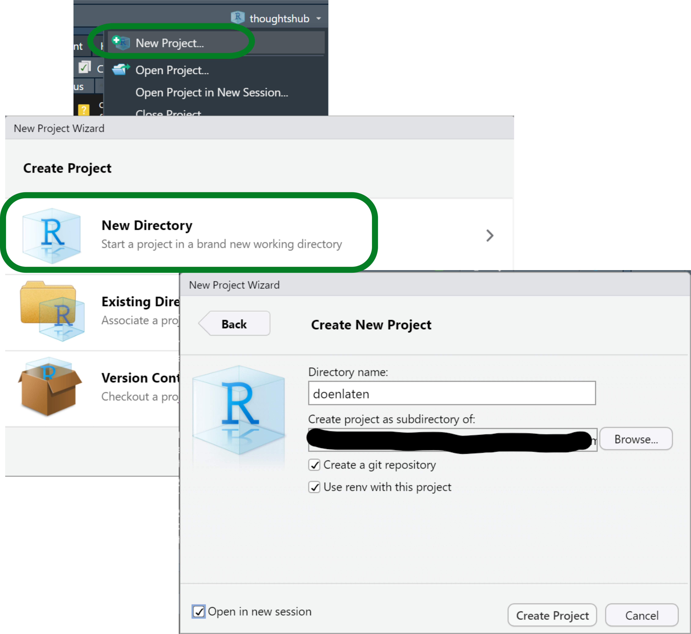
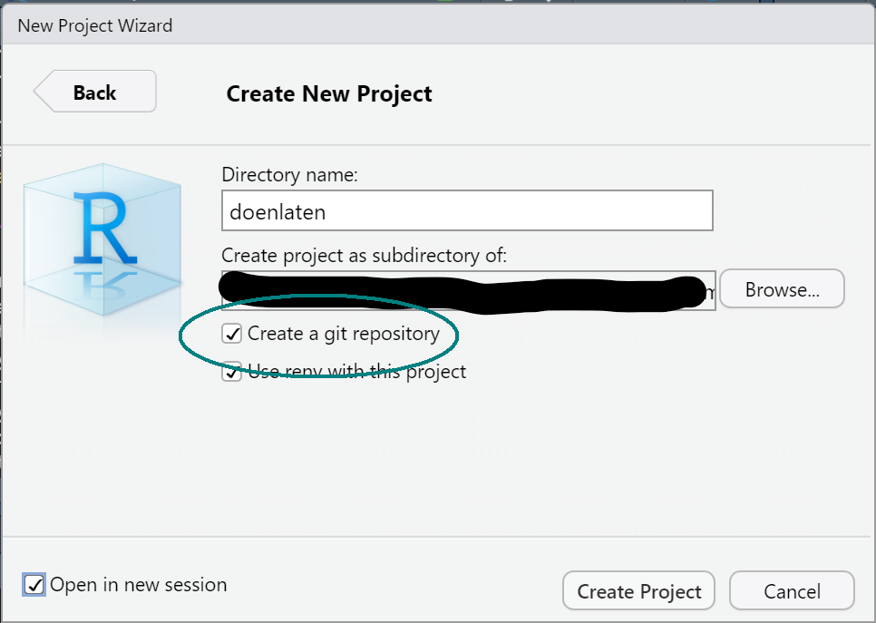

# install.packages("usethis") # if not installed
usethis::use_git()Git Cheetsheet
Reference cheatsheet (or as it going, reference manual) for using Git(Hub) with the course project. All the code starting with git should be typed in the (Git Bash) Terminal.
Requirements
If you have already set up your project and repository, you may skip Section 1. Section 2 goes over the basic workflow you might do any time you work on your project, whereas Section 3 delves into the particular workflow when working with branches. Finally, Section 4 goes over the main technical terms (but do tell me if you’d like me to add any other) and Section 5 will collect common issues that you’ve reported.
1 Set-up from scratch
1.1 Create an R project that is also a git repository.

When you start an R project in R Studio, check the box that says “Create a git repository”.

Warning
If you don’t see the box, you probably still have to install Git!
If you created an R project that is not a Git repository, you can still turn it into one with usethis::use_git(). When an R project is also a Git repository, you will see a “Git” tab.
1.2 Stage and commit
A freshly created R project + git repository has two files: the “{project-name}.Rproj” file that indicates that it’s an R project, and the “.gitignore” file that tells Git which files not to track.
By setting up a git repository in an R project folder, “.gitignore” is automatically populated with types of files that should be ignored:
# .gitignore
.Rproj.user
.Rhistory
.RData
.RuserdataIn order to start up with git, you need to commit the files. Before committing, you need to stage the files you wish to commit. In other words, staging states which files you want to keep track of, and committing takes a snapshot of their current state.
git add .
git commit -m "first commit"We stage with git add; git add . stages all files. Eventually you might want to only stage some of them, e.g. specific folders or files; in that case you type git add my-file.txt or git add some-folder.
With git commit we take a snapshot of all the staged files; -m indicates that the following text (in quotation marks) is the commit message. This message should be a short description of the change you’re taking a snapshot of.
1.3 Connect to the remote
The next step after committing changes, if you want online backup or to submit something, is to push. This uploads the current commits to the remote repository, i.e. the url you received. However, first we have to tell git what that url is. Suppose that your url is https://github.com/mclm2022/montes.git (It will not be montes), then you write the following:
git remote add origin https://github.com/mclm2022/montes.gitThis has set the url as a remote destination called origin. You could also add a different remote, e.g. a repository in your private account, with a different name.
1.4 Push changes
Finally we can push the changes. Normally, git push will suffice. This first time, we indicate that the default remote location is origin and that we push the main branch, creating a main branch in the remote if it doesn’t exist.
If your main branch is not called main (but maybe master), we first rename it (with the first line below).
git branch -M main
git push -u origin main
Errors in pushing
If you did not commit changes yet, there is nothing to push! You will get an error. Make sure you have committed something!
If you have never done something like this in R Studio, you will also be asked to identify yourself and/or log in to GitHub. Just follow the instructions on the Terminal :)
2 Daily workflow
For the purposes of this cheetsheet we’ll assume that all the changes happen in your local computer. That means that your local repository will be always more up-to-date than the remote, and that there will be nothing in the remote that was not tracked in the local version.
Before/after each step, it can be useful to run git status, which will let you know:
In which branch you are working.
Which files, if any, are yet to be staged. (=you have to run
git add)Which files, if any, have been staged and are waiting to be committed. (=you have to run
git commit)How many commits you have that have not been pushed to the remote yet. (=you’ll have to run
git push)
2.1 Work on your local version.
Write code, write your Quarto file, whatever you want.
2.2 Stage the changes you will want to commit.
Here you can select which files you want to keep and discard changes you’re not interested in! You’re just letting git know what it will have to track.
The handiest version is with the period/dot, which stages all files that have not been staged yet.
git add .Alternatively, you can specify a file or folder to stage, if there are files you don’t want to track yet. For example, you may have changes in both your code (let’s say, an “R” folder) and your Quarto file but you want to link them to different commit messages.
git add R
git commit -m "Updated code"
git add report.qmd
git commit -m "fix typos in Quarto document"2.3 Commit
Committing equals to taking a snapshot of the state of your project. You can do this several times a day if you have different steps or important changes.
If you just run git commit, you will be taken to an editor to introduce a message. You can avoid this by adding the -m flag followed by an informative message.
git commit -m "This is a commit message"Up to committing, this is simply working locally, with Git.
2.4 Push
The command to upload your changes to the remote repository, e.g. the GitHub repository, is git push.
git pushIf there is any incompatibility with the remote repository, you will get a warning.
Note
If we get to the point that I give feedback by modifying your project and pushing my notes to the local repository, you will have to retrieve the changes with git pull. You should do that before you stage or commit anything else, or it will be troublesome.
3 Work with branches
If you want to work on a separate branch, important commands are git checkout and git commit. A branch doesn’t really exist until you have committed something to it!
So, first, make sure you committed something in your main branch.
3.1 Create a new branch
The command to create a new branch is git branch.
git branch new-branchThis only sets up its creation, but does not move you to the branch.
3.2 Switch to a branch
You can move from one branch to the other with git checkout <branch>:
git checkout new-branchIf you’re using Git Bash, you should see the name of your branch in parenthesis after the name of your directory in the Terminal. The output would be something like this:
user@machine project-directory (main)
$ git checkout new-branch
user@machine project-directory (new-branch)
$You can also switch to a non-existent branch and create it simultaneously with the -b flag:
git checkout -b new-branch3.3 Make changes and commit
In order for this branch to have any substance at all, you need to commit something. The example in class was to copy a folder with a corpus and to add the name of the corpus in the “.gitignore” file. This way, the “.gitignore” has changed and it has to be staged and committed.
If you want a more drastic change, you could create a file, such a script or a Quarto document. Once you have added and committed it, it exists in the new-branch branch but not in main.
git add .
git commit -m "start new branch"By running git checkout main you will switch to the main branch and see that the new file is not there. You would also see that “.gitignore” is not ignoring the corpus folder.
If you want to send the changes to a new-branch branch in the remote location (because you like the online-backup option), you can also push them. As before, the first time you will have to run:
git push -u origin new-branchAnd the rest of the times:
git pushIf you do just git push from the beginning, it will throw you an error and give you the appropriate instructions.
Important
I will not look at things you push to branches other than main!
If you want to submit something, push the changes to the remote main.
If you want to keep it to yourself, push it to another branch!
Once you are done with a branch you can merge it with another… which doesn’t mean you delete it. It just means that the current state of the new branch is brought to the previous branch. For example, if you want to bring all you have in new-branch to the main branch, you run git checkout followed by git merge. Optionally, you can delete the other branch with git branch -d new-branch… but it’s not necessary.
git checkout main
git merge new-branchOr alternatively
git merge main new-branchIf you just want to move part of the work in one branch to the other, instead of merging them fully, you can use git checkout <branch> <file>, e.g.
git checkout main
git checkout new-branch R4 Glossary
- (git) repository
-
A directory set up for version control with Git. Also its counterpart online.
- branch
-
A line of work in your repository. The default branch is typically
mainormaster, but you can work with other branches as parallel lines of work. That way, you can modify files without worrying about upsetting the main, working version. See Section 3 to learn more about how to work with them. - commit
-
Take a snapshot of the current state of your repository. This is done locally1, i.e. it does not publish your changes on GitHub. It’s done with
git commit, and you can follow it with-mand a commit message if you don’t want an editor to open. - local
-
A local version of your repository For example, the directory in your computer that is a git repository. The copy of that repository in my computer is also a local version.
-
Local versions don’t communicate directly: in order for my local version to be up-to-date with yours, you have to push your (committed) changes to the remote and then I have to pull them from the remote to my local version.
- pull
-
Get data from the remote to a local repository. It’s done with
git pull. - push
-
Send data from a local repository to its remote, e.g. GitHub. It’s done with
git push. Only committed changes will be pushed. - remote
-
Online back-up of your data, e.g. in a GitHub server. This is what you see on https://github.com/mclm2022/, for example.
-
With
git remote add origin <url>you connected a local repository to a remote defined by that URL and named itorigin. - stage
-
Prepare files for a commit, i.e. let git know which files you are ready to take a snapshot of. It’s done with
git addfollowed by the name of the file or, to stage all files, a period.
5 Troubleshooting
5.1 Unable to push
Error message includes the following hint:
Updates were rejected because the remote contains work that you do not have locally.This means that your remote (what you see on the GitHub site) has history that the local version (what you have on your computer) has never had. The most likely reason is that you added or modified a file from the GitHub website instead of creating it locally and pushing it.
This is not wrong per se, but it complicates things (that’s why I didn’t ask you to do that). How do you solve it?
git pullThis is going to try to bring the local version up-to-date with the remote version. It might also give you instructions on how to merge it –maybe you have to write a message or decide on disagreements.
Tip
Sometimes git itself gives you suggestions on code you should write. For example, git pull may fail and you receive a message suggesting you to write something like:
git pull <remote> <branch>Because your remote is called origin, and when your branch is called main, this translates to:
git pull origin mainIf you do get this instruction, notice that there is an additional suggestion to run:
git branch --set-to-origin=origin/<branch> mainThis means that you still need to inform what is the name of the origin branch (the branch in the remote, i.e. the GitHub website) that matches your local main branch. It will be main, so just replace <branch> with main and you will be able to just git pull in the future.
Pulling in GitHub is part of a daily workflow when you have more than one local source pushing into the remote… but that is not the case in this course. Since many of you have zero to no experience with GitHub, we’ll avoid pulling and merging on your side for now. Unless you’re confident with GitHub, focus on working on your local computer, pushing to the website and getting comfortable with those instructions, before moving on to other tasks.
Footnotes
Although you can also modify files on the website and commit those changes too! However, see Section 5.1 for possible consequences.↩︎